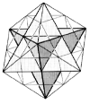

Table of Contents
200.00 SYNERGETICS
200.001 Definition: Synergetics
201.00 Experientially Founded Mathematics
201.10 Accommodation of Proclivities, Phases, and Disciplines
201.20 Synergetics Hierarchy: Grand Strategy
202.00 Angular Topology
203.00 Scope
204.00 Paradox of the Computer
205.00 Vector Equilibrium
215.00 A Geometry of Vectors
216.00 Significance of Isotropic Vector Matrix
217.00 Prospects for Synergetics
220.00 Synergetics Principles
220.01 Principles
220.10 Reality and Eternality
221.00 Principle of Unity
222.00 Omnidirectional Closest Packing of Spheres
222.01 Definition
222.10 Equation for Cumulative Number of Spheres
222.20 Characteristics of Closest Packing of Spheres
222.30 Volume of Vector Equilibrium
222.40 Mathematical Evolution of Formula for Omnidirectional Closest Packing of Spheres
222.50 Classes of Closest Packing
223.00 Principle of Prime Number Inherency and Constant Relative Abundance of the Topology of Symmetrical Structural Systems
223.01 Definition
223.02 Axis of Spin
223.03 Equation of Prime Number Inherency of All Symmetrical Structural Omnitriangulated Systems
223.04 Equation of Constant Relative Abundance of Topological Aspects of All Symmetrical Structural Systems
223.05 Two Kinds of Twoness
223.10 Constant Relative Abundance
223.20 Primary Systems
223.21 Primary Systems: Equations
223.30 Symmetrical Analysis of Topological Hierarchies
223.34 Symmetrical Analysis of Topological Hierarchies
223.40 Powering
223.50 Prime Number Inherency
223.60 Analysis of Topological Hierarchies: Omnitriangulation
223.64 Table: Synergetics Hierarchy of Topological Characteristics of Omnitriangulated Polyhedral Systems
223.67 Synergetics Hierarchy
223.70 Planck's Constant
223.80 Energy Has Shape
224.00 Principle of Angular Topology
224.01 Definition
224.05 Line
224.06 Triangle
224.07 Sphere
224.08 Tetrahedron
224.10 Descartes
224.11 The Calculus
224.12 Cyclic Unity
224.20 Equation of Angular Topology
224.30 Polarity
224.40 Multivalent Applications
224.50 Corollary: Principle of Finite Universe Conservation
224.60 Tetrahedral Mensuration
225.00 Principle of Design Covariables
225.01 Definition
226.00 Principle of Functions
226.01 Definition
226.10 Corollary: Principle of Complementarity
227.00 Principle of Order Underlying Randomness
227.01 Definition
228.00 Scenario Principle
228.01 Definition
228.10 Considerable Set
229.00 Principle of Synergetic Advantage
229.01 Definition
229.10 Corollary: Principle of Irreversibility
230.00 Tetrahedral Number
230.01 Definition
231.00 Principle of Universal Integrity
231.01 Definition
232.00 Principle of Conservation of Symmetry
232.01 Definition
240.00 Synergetics Corollaries
250.00 Discoveries of Synergetics
250.01 Discovery
250.10 Academic Grading Variables in Respect to Science Versus Humanities
250.20 My Independent Mathematical Explorations
250.30 Remoteness of Synergetics Vocabulary
250.40 The Climate of Invention
250.50 Coincidental Nature of Discoveries
250.60 Proofs
251.00 Discoveries of Synergetics: Inventory
260.00 The Epistemography of Generalization and Special Case
260.10 Invisibility of Macro- and Microresolutions
260.20 Convergent Vs Parallel Perception
260.30 Physical Experience and Closest Packing of Spheres
260.40 Convergence to a Nucleus
260.50 Precession of Two Sets of 10 Closest-Packed Spheres
261.00 Getting Nature into a Corner
262.00 Conceptual Minimum
263.00 Nothingness and Tunability
264.00 Geometry of Self and Otherness
264.10 Prime Othernesses: Single and Plural Otherness
265.00 Unity of Tetrasystem
266.00 Science and Mathematics in the Language of Electromagnetics
267.00 Observer as Tetrasystem
268.00 Omnioriented Tunability
269.00 Topology of Ins, Outs, and Interrelationships
270.00 Synergetics Operational Accountability
270.10 Topological Accountability of All Vanishing and Elsewhere- Reappearing Quanta
Next Page
Copyright © 1997 Estate of Buckminster Fuller